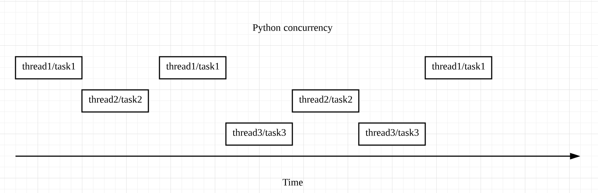
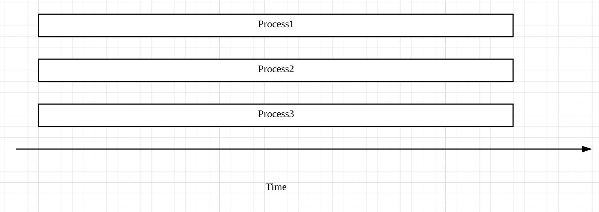

- 00 开篇词 从工程的角度深入理解Python.md.html
- 01 如何逐步突破，成为Python高手？.md.html
- 02 Jupyter Notebook为什么是现代Python的必学技术？.md.html
- 03 列表和元组，到底用哪一个？.md.html
- 04 字典、集合，你真的了解吗？.md.html
- 05 深入浅出字符串.md.html
- 06 Python “黑箱”：输入与输出.md.html
- 07 修炼基本功：条件与循环.md.html
- 08 异常处理：如何提高程序的稳定性？.md.html
- 09 不可或缺的自定义函数.md.html
- 10 简约不简单的匿名函数.md.html
- 11 面向对象（上）：从生活中的类比说起.md.html
- 12 面向对象（下）：如何实现一个搜索引擎？.md.html
- 13 搭建积木：Python 模块化.md.html
- 14 答疑（一）：列表和元组的内部实现是怎样的？.md.html
- 15 Python对象的比较、拷贝.md.html
- 16 值传递，引用传递or其他，Python里参数是如何传递的？.md.html
- 17 强大的装饰器.md.html
- 18 metaclass，是潘多拉魔盒还是阿拉丁神灯？.md.html
- 19 深入理解迭代器和生成器.md.html
- 20 揭秘 Python 协程.md.html
- 21 Python并发编程之Futures.md.html
- 22 并发编程之Asyncio.md.html
- 23 你真的懂Python GIL（全局解释器锁）吗？.md.html
- 24 带你解析 Python 垃圾回收机制.md.html
- 25 答疑（二）：GIL与多线程是什么关系呢？.md.html
- 26 活都来不及干了，还有空注意代码风格？！.md.html
- 27 学会合理分解代码，提高代码可读性.md.html
- 28 如何合理利用assert？.md.html
- 29 巧用上下文管理器和With语句精简代码.md.html
- 30 真的有必要写单元测试吗？.md.html
- 31 pdb & cProfile：调试和性能分析的法宝.md.html
- 32 答疑（三）：如何选择合适的异常处理方式？.md.html
- 33 带你初探量化世界.md.html
- 34 RESTful & Socket：搭建交易执行层核心.md.html
- 35 RESTful & Socket：行情数据对接和抓取.md.html
- 36 Pandas & Numpy：策略与回测系统.md.html
- 37 Kafka & ZMQ：自动化交易流水线.md.html
- 38 MySQL：日志和数据存储系统.md.html
- 39 Django：搭建监控平台.md.html
- 40 总结：Python中的数据结构与算法全景.md.html
- 41 硅谷一线互联网公司的工作体验.md.html
- 42 细数技术研发的注意事项.md.html
- 43 Q&A：聊一聊职业发展和选择.md.html
- 加餐 带你上手SWIG：一份清晰好用的SWIG编程实践指南.md.html
- 结束语 技术之外的几点成长建议.md.html
- 捐赠
21 Python并发编程之Futures
你好，我是景霄。
无论对于哪门语言，并发编程都是一项很常用很重要的技巧。比如我们上节课所讲的很常见的爬虫，就被广泛应用在工业界的各个领域。我们每天在各个网站、各个App上获取的新闻信息，很大一部分便是通过并发编程版的爬虫获得。
正确合理地使用并发编程，无疑会给我们的程序带来极大的性能提升。今天这节课，我就带你一起来学习理解、运用Python中的并发编程——Futures。
区分并发和并行
在我们学习并发编程时，常常同时听到并发（Concurrency）和并行（Parallelism）这两个术语，这两者经常一起使用，导致很多人以为它们是一个意思，其实不然。
首先你要辨别一个误区，在Python中，并发并不是指同一时刻有多个操作（thread、task）同时进行。相反，某个特定的时刻，它只允许有一个操作发生，只不过线程/任务之间会互相切换，直到完成。我们来看下面这张图：

图中出现了thread和task两种切换顺序的不同方式，分别对应Python中并发的两种形式——threading和asyncio。
对于threading，操作系统知道每个线程的所有信息，因此它会做主在适当的时候做线程切换。很显然，这样的好处是代码容易书写，因为程序员不需要做任何切换操作的处理；但是切换线程的操作，也有可能出现在一个语句执行的过程中（比如 x += 1），这样就容易出现race condition的情况。
而对于asyncio，主程序想要切换任务时，必须得到此任务可以被切换的通知，这样一来也就可以避免刚刚提到的 race condition的情况。
至于所谓的并行，指的才是同一时刻、同时发生。Python中的multi-processing便是这个意思，对于multi-processing，你可以简单地这么理解：比如你的电脑是6核处理器，那么在运行程序时，就可以强制Python开6个进程，同时执行，以加快运行速度，它的原理示意图如下：

对比来看，
- 并发通常应用于I/O操作频繁的场景，比如你要从网站上下载多个文件，I/O操作的时间可能会比CPU运行处理的时间长得多。
- 而并行则更多应用于CPU heavy的场景，比如MapReduce中的并行计算，为了加快运行速度，一般会用多台机器、多个处理器来完成。
并发编程之Futures
单线程与多线程性能比较
接下来，我们一起通过具体的实例，从代码的角度来理解并发编程中的Futures，并进一步来比较其与单线程的性能区别。
假设我们有一个任务，是下载一些网站的内容并打印。如果用单线程的方式，它的代码实现如下所示（为了简化代码，突出主题，此处我忽略了异常处理）：
import requests
import time
def download_one(url):
resp = requests.get(url)
print('Read {} from {}'.format(len(resp.content), url))
def download_all(sites):
for site in sites:
download_one(site)
def main():
sites = [
'https://en.wikipedia.org/wiki/Portal:Arts',
'https://en.wikipedia.org/wiki/Portal:History',
'https://en.wikipedia.org/wiki/Portal:Society',
'https://en.wikipedia.org/wiki/Portal:Biography',
'https://en.wikipedia.org/wiki/Portal:Mathematics',
'https://en.wikipedia.org/wiki/Portal:Technology',
'https://en.wikipedia.org/wiki/Portal:Geography',
'https://en.wikipedia.org/wiki/Portal:Science',
'https://en.wikipedia.org/wiki/Computer_science',
'https://en.wikipedia.org/wiki/Python_(programming_language)',
'https://en.wikipedia.org/wiki/Java_(programming_language)',
'https://en.wikipedia.org/wiki/PHP',
'https://en.wikipedia.org/wiki/Node.js',
'https://en.wikipedia.org/wiki/The_C_Programming_Language',
'https://en.wikipedia.org/wiki/Go_(programming_language)'
]
start_time = time.perf_counter()
download_all(sites)
end_time = time.perf_counter()
print('Download {} sites in {} seconds'.format(len(sites), end_time - start_time))
if __name__ == '__main__':
main()
# 输出
Read 129886 from https://en.wikipedia.org/wiki/Portal:Arts
Read 184343 from https://en.wikipedia.org/wiki/Portal:History
Read 224118 from https://en.wikipedia.org/wiki/Portal:Society
Read 107637 from https://en.wikipedia.org/wiki/Portal:Biography
Read 151021 from https://en.wikipedia.org/wiki/Portal:Mathematics
Read 157811 from https://en.wikipedia.org/wiki/Portal:Technology
Read 167923 from https://en.wikipedia.org/wiki/Portal:Geography
Read 93347 from https://en.wikipedia.org/wiki/Portal:Science
Read 321352 from https://en.wikipedia.org/wiki/Computer_science
Read 391905 from https://en.wikipedia.org/wiki/Python_(programming_language)
Read 321417 from https://en.wikipedia.org/wiki/Java_(programming_language)
Read 468461 from https://en.wikipedia.org/wiki/PHP
Read 180298 from https://en.wikipedia.org/wiki/Node.js
Read 56765 from https://en.wikipedia.org/wiki/The_C_Programming_Language
Read 324039 from https://en.wikipedia.org/wiki/Go_(programming_language)
Download 15 sites in 2.464231112999869 seconds
这种方式应该是最直接也最简单的：
- 先是遍历存储网站的列表；
- 然后对当前网站执行下载操作；
- 等到当前操作完成后，再对下一个网站进行同样的操作，一直到结束。
我们可以看到总共耗时约2.4s。单线程的优点是简单明了，但是明显效率低下，因为上述程序的绝大多数时间，都浪费在了I/O等待上。程序每次对一个网站执行下载操作，都必须等到前一个网站下载完成后才能开始。如果放在实际生产环境中，我们需要下载的网站数量至少是以万为单位的，不难想象，这种方案根本行不通。
接着我们再来看，多线程版本的代码实现：
import concurrent.futures
import requests
import threading
import time
def download_one(url):
resp = requests.get(url)
print('Read {} from {}'.format(len(resp.content), url))
def download_all(sites):
with concurrent.futures.ThreadPoolExecutor(max_workers=5) as executor:
executor.map(download_one, sites)
def main():
sites = [
'https://en.wikipedia.org/wiki/Portal:Arts',
'https://en.wikipedia.org/wiki/Portal:History',
'https://en.wikipedia.org/wiki/Portal:Society',
'https://en.wikipedia.org/wiki/Portal:Biography',
'https://en.wikipedia.org/wiki/Portal:Mathematics',
'https://en.wikipedia.org/wiki/Portal:Technology',
'https://en.wikipedia.org/wiki/Portal:Geography',
'https://en.wikipedia.org/wiki/Portal:Science',
'https://en.wikipedia.org/wiki/Computer_science',
'https://en.wikipedia.org/wiki/Python_(programming_language)',
'https://en.wikipedia.org/wiki/Java_(programming_language)',
'https://en.wikipedia.org/wiki/PHP',
'https://en.wikipedia.org/wiki/Node.js',
'https://en.wikipedia.org/wiki/The_C_Programming_Language',
'https://en.wikipedia.org/wiki/Go_(programming_language)'
]
start_time = time.perf_counter()
download_all(sites)
end_time = time.perf_counter()
print('Download {} sites in {} seconds'.format(len(sites), end_time - start_time))
if __name__ == '__main__':
main()
## 输出
Read 151021 from https://en.wikipedia.org/wiki/Portal:Mathematics
Read 129886 from https://en.wikipedia.org/wiki/Portal:Arts
Read 107637 from https://en.wikipedia.org/wiki/Portal:Biography
Read 224118 from https://en.wikipedia.org/wiki/Portal:Society
Read 184343 from https://en.wikipedia.org/wiki/Portal:History
Read 167923 from https://en.wikipedia.org/wiki/Portal:Geography
Read 157811 from https://en.wikipedia.org/wiki/Portal:Technology
Read 91533 from https://en.wikipedia.org/wiki/Portal:Science
Read 321352 from https://en.wikipedia.org/wiki/Computer_science
Read 391905 from https://en.wikipedia.org/wiki/Python_(programming_language)
Read 180298 from https://en.wikipedia.org/wiki/Node.js
Read 56765 from https://en.wikipedia.org/wiki/The_C_Programming_Language
Read 468461 from https://en.wikipedia.org/wiki/PHP
Read 321417 from https://en.wikipedia.org/wiki/Java_(programming_language)
Read 324039 from https://en.wikipedia.org/wiki/Go_(programming_language)
Download 15 sites in 0.19936635800002023 seconds
非常明显，总耗时是0.2s左右，效率一下子提升了10倍多。
我们具体来看这段代码，它是多线程版本和单线程版的主要区别所在：
with concurrent.futures.ThreadPoolExecutor(max_workers=5) as executor:
executor.map(download_one, sites)
这里我们创建了一个线程池，总共有5个线程可以分配使用。executer.map()与前面所讲的Python内置的map()函数类似，表示对sites中的每一个元素，并发地调用函数download_one()。
顺便提一下，在download_one()函数中，我们使用的requests.get()方法是线程安全的（thread-safe），因此在多线程的环境下，它也可以安全使用，并不会出现race condition的情况。
另外，虽然线程的数量可以自己定义，但是线程数并不是越多越好，因为线程的创建、维护和删除也会有一定的开销。所以如果你设置的很大，反而可能会导致速度变慢。我们往往需要根据实际的需求做一些测试，来寻找最优的线程数量。
当然，我们也可以用并行的方式去提高程序运行效率。你只需要在download_all()函数中，做出下面的变化即可：
with futures.ThreadPoolExecutor(workers) as executor
=>
with futures.ProcessPoolExecutor() as executor:
在需要修改的这部分代码中，函数ProcessPoolExecutor()表示创建进程池，使用多个进程并行的执行程序。不过，这里我们通常省略参数workers，因为系统会自动返回CPU的数量作为可以调用的进程数。
我刚刚提到过，并行的方式一般用在CPU heavy的场景中，因为对于I/O heavy的操作，多数时间都会用于等待，相比于多线程，使用多进程并不会提升效率。反而很多时候，因为CPU数量的限制，会导致其执行效率不如多线程版本。
到底什么是 Futures ？
Python中的Futures模块，位于concurrent.futures和asyncio中，它们都表示带有延迟的操作。Futures会将处于等待状态的操作包裹起来放到队列中，这些操作的状态随时可以查询，当然，它们的结果或是异常，也能够在操作完成后被获取。
通常来说，作为用户，我们不用考虑如何去创建Futures，这些Futures底层都会帮我们处理好。我们要做的，实际上是去schedule这些Futures的执行。
比如，Futures中的Executor类，当我们执行executor.submit(func)时，它便会安排里面的func()函数执行，并返回创建好的future实例，以便你之后查询调用。
这里再介绍一些常用的函数。Futures中的方法done()，表示相对应的操作是否完成——True表示完成，False表示没有完成。不过，要注意，done()是non-blocking的，会立即返回结果。相对应的add_done_callback(fn)，则表示Futures完成后，相对应的参数函数fn，会被通知并执行调用。
Futures中还有一个重要的函数result()，它表示当future完成后，返回其对应的结果或异常。而as_completed(fs)，则是针对给定的future迭代器fs，在其完成后，返回完成后的迭代器。
所以，上述例子也可以写成下面的形式：
import concurrent.futures
import requests
import time
def download_one(url):
resp = requests.get(url)
print('Read {} from {}'.format(len(resp.content), url))
def download_all(sites):
with concurrent.futures.ThreadPoolExecutor(max_workers=5) as executor:
to_do = []
for site in sites:
future = executor.submit(download_one, site)
to_do.append(future)
for future in concurrent.futures.as_completed(to_do):
future.result()
def main():
sites = [
'https://en.wikipedia.org/wiki/Portal:Arts',
'https://en.wikipedia.org/wiki/Portal:History',
'https://en.wikipedia.org/wiki/Portal:Society',
'https://en.wikipedia.org/wiki/Portal:Biography',
'https://en.wikipedia.org/wiki/Portal:Mathematics',
'https://en.wikipedia.org/wiki/Portal:Technology',
'https://en.wikipedia.org/wiki/Portal:Geography',
'https://en.wikipedia.org/wiki/Portal:Science',
'https://en.wikipedia.org/wiki/Computer_science',
'https://en.wikipedia.org/wiki/Python_(programming_language)',
'https://en.wikipedia.org/wiki/Java_(programming_language)',
'https://en.wikipedia.org/wiki/PHP',
'https://en.wikipedia.org/wiki/Node.js',
'https://en.wikipedia.org/wiki/The_C_Programming_Language',
'https://en.wikipedia.org/wiki/Go_(programming_language)'
]
start_time = time.perf_counter()
download_all(sites)
end_time = time.perf_counter()
print('Download {} sites in {} seconds'.format(len(sites), end_time - start_time))
if __name__ == '__main__':
main()
# 输出
Read 129886 from https://en.wikipedia.org/wiki/Portal:Arts
Read 107634 from https://en.wikipedia.org/wiki/Portal:Biography
Read 224118 from https://en.wikipedia.org/wiki/Portal:Society
Read 158984 from https://en.wikipedia.org/wiki/Portal:Mathematics
Read 184343 from https://en.wikipedia.org/wiki/Portal:History
Read 157949 from https://en.wikipedia.org/wiki/Portal:Technology
Read 167923 from https://en.wikipedia.org/wiki/Portal:Geography
Read 94228 from https://en.wikipedia.org/wiki/Portal:Science
Read 391905 from https://en.wikipedia.org/wiki/Python_(programming_language)
Read 321352 from https://en.wikipedia.org/wiki/Computer_science
Read 180298 from https://en.wikipedia.org/wiki/Node.js
Read 321417 from https://en.wikipedia.org/wiki/Java_(programming_language)
Read 468421 from https://en.wikipedia.org/wiki/PHP
Read 56765 from https://en.wikipedia.org/wiki/The_C_Programming_Language
Read 324039 from https://en.wikipedia.org/wiki/Go_(programming_language)
Download 15 sites in 0.21698231499976828 seconds
这里，我们首先调用executor.submit()，将下载每一个网站的内容都放进future队列to_do，等待执行。然后是as_completed()函数，在future完成后，便输出结果。
不过，这里要注意，future列表中每个future完成的顺序，和它在列表中的顺序并不一定完全一致。到底哪个先完成、哪个后完成，取决于系统的调度和每个future的执行时间。
为什么多线程每次只能有一个线程执行？
前面我说过，同一时刻，Python主程序只允许有一个线程执行，所以Python的并发，是通过多线程的切换完成的。你可能会疑惑这到底是为什么呢？
这里我简单提一下全局解释器锁的概念，具体内容后面会讲到。
事实上，Python的解释器并不是线程安全的，为了解决由此带来的race condition等问题，Python便引入了全局解释器锁，也就是同一时刻，只允许一个线程执行。当然，在执行I/O操作时，如果一个线程被block了，全局解释器锁便会被释放，从而让另一个线程能够继续执行。
总结
这节课，我们首先学习了Python中并发和并行的概念与区别。
- 并发，通过线程和任务之间互相切换的方式实现，但同一时刻，只允许有一个线程或任务执行。
- 而并行，则是指多个进程同时执行。
并发通常用于I/O操作频繁的场景，而并行则适用于CPU heavy的场景。
随后，我们通过下载网站内容的例子，比较了单线程和运用Futures的多线程版本的性能差异。显而易见，合理地运用多线程，能够极大地提高程序运行效率。
我们还一起学习了Futures的具体原理，介绍了一些常用函数比如done()、result()、as_completed()等的用法，并辅以实例加以理解。
要注意，Python中之所以同一时刻只允许一个线程运行，其实是由于全局解释器锁的存在。但是对I/O操作而言，当其被block的时候，全局解释器锁便会被释放，使其他线程继续执行。
思考题
最后给你留一道思考题。你能否通过查阅相关文档，为今天所讲的这个下载网站内容的例子，加上合理的异常处理，让程序更加稳定健壮呢？欢迎在留言区写下你的思考和答案，也欢迎你把今天的内容分享给你的同事朋友，我们一起交流、一起进步。
© 2019 - 2023 Liangliang Lee. Powered by gin and hexo-theme-book.